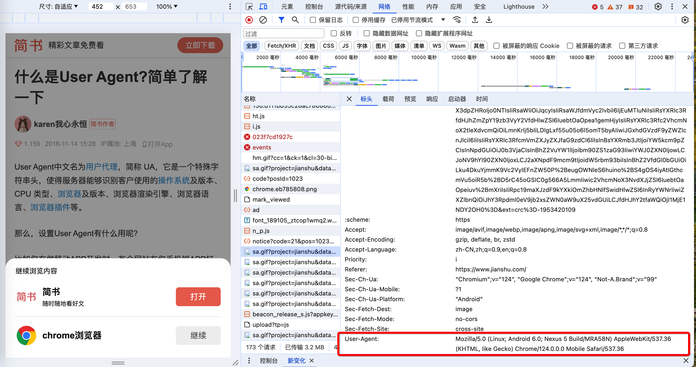

SEO#
当前总行数：455 行
基本概念.名词解释#
-
IIS，全称是 Internet Information Services,是微软公司推出的一种互联网基础服务器
-
它是运行在Windows NT系列操作系统上的Web服务器。
-
IIS主要特点包括:
- Web服务器：IIS可以作为Web服务器用于托管网站、发布网页以及处理Web应用程序等。
- FTP服务器 ：支持FTP服务,用于文件的上传和下载。
- SMTP服务器：可以作为SMTP服务器来发送和传输电子邮件。
- NNTP服务器：支持新闻组服务,作为NNTP服务器使用。
- 安全性能：结合了Windows NT/2000的安全认证体系,支持SSL安全连接等多种加密方式。
- 集成性能：与Windows NT/2000无缝集成,内置了ASP、ASP.NET等开发技术的支持。
- 可扩展性：具有模块化设计,可通过安装组件来扩展服务器的功能。
-
IIS最常见的应用场景是作为企业级Web应用程序的服务器环境，承载ASP.NET、PHP等各种Web程序和服务；
-
由于与Windows NT/2000系统的深度集成，IIS特别适用于构建基于Windows平台的网站或应用服务器；
虽然IIS曾经存在过一些安全漏洞,但微软一直在不断加强IIS的安全性和可靠性。从IIS 6.0版本开始,IIS的安全性和可用性都有了大幅度的提高。当前最新版本是IIS 10,随着Windows Server 2019一同发布。
总之,IIS作为Web服务器在Windows Server系统中扮演着非常重要的角色,成为构建基于Windows平台Web解决方案的主力产品。
-
-
Nginx，是一个高性能的HTTP和反向代理服务器，也是一个IMAP/POP3/SMTP代理服务器；
-
它是由Igor Sysoev在2004年创建，主要用于解决C10K问题。即，一个允许处理大量高并发连接的服务器。
-
Nginx的主要特点包括:
- 高并发高性能 Nginx使用异步事件驱动的方式处理请求,在单核CPU的情况下也能够支持大量的并发连接数。官方数据表示能够支持50,000个并发连接数。
- 低内存消耗 在3GB内存的服务器上也能可以运行上万个连接,内存消耗非常低。
- 高度模块化的设计 Nginx支持丰富的模块扩展,包括负载均衡、反向代理、SPDY/HTTP2、HTTPS等功能。
- 热部署 支持几乎无中断地重启和升级。
- BSD许可协议 Nginx使用BSD许可协议,是一款自由软件,允许修改源码和重新发布。
-
Nginx主要应用场景包括:
- 反向代理和负载均衡 作为Web服务器的反向代理服务器,实现负载均衡。
- HTTP缓存 作为缓冲服务器,实现反向代理缓存或前端缓存。
- Web服务器 Nginx完全可以直接作为静态资源Web服务器使用。
- 前端服务器 与应用服务器对接实现动静分离,提高应用服务器性能。
-
-
Apache，是一个广为人知的开源万维网(World Wide Web)服务器。
-
它最初由美国伊利诺伊大学厄巴纳-香槟分校(NCSA)编写,后由Apache软件基金会进一步发展和维护。
-
Apache服务器以其稳定性、安全性以及跨平台性著称。
-
Apache服务器的一些主要特点包括:
- 开源和免费：Apache是基于开源模式开发的免费软件,不需要支付任何许可费用。
- 跨平台：Apache可运行在包括Windows、Unix、Linux、macOS等多种操作系统平台上。
- 模块化设计：Apache拥有模块化的设计架构,允许用户根据需求加载不同的模块扩展功能。
- 稳定性优秀：Apache以其卓越的稳定性而闻名,能够长期、持续地为大量请求提供服务。
- 安全性强：Apache提供了SSL/TLS加密通信、基于主机的多重身份认证等安全功能。
- 高度可配置：Apache服务器配置灵活,可以根据需要进行大量的定制配置。
- 庞大的社区支持：凭借开源的优势,Apache拥有庞大的社区支持与丰富的第三方模块资源。
-
Apache具有Web服务器、反向代理服务器、邮件代理服务器等多种用途。
-
它可用于托管网站内容、处理动态网页请求、支持多种脚本语言以及集群服务等。
-
Apache占有很大的网络服务器市场份额,被众多知名网站和应用程序所使用。
-
-
WordPress，是一个流行的开源内容管理系统(CMS)和博客平台。
-
PHP开发的
-
它最初是为了创建网络日志(博客)而开发的,但现在已经发展成为构建各种类型网站的强大工具,包括博客、新闻门户网站、企业官网、在线商店等。
-
WordPress 具有以下主要特点：
- 开源免费：WordPress 基于 GPL 许可证，是一款完全免费且开源的软件，可以免费下载和自定义修改。
- 主题和插件生态：WordPress 有着庞大且不断壮大的主题和插件生态，可以轻松扩展网站的功能和定制外观。
- 编辑器友好：WordPress 提供了一个所见即所得(WYSIWYG)的编辑器界面，非技术人员也可以方便地编辑和发布内容。
- SEO 友好：WordPress 对搜索引擎优化有着良好的支持,包括可自定义的永久链接结构等。
- 多用户和权限管理：支持多用户协作模式，可以为不同的用户分配不同的权限角色。
- 多媒体支持：内置了对图像、视频、音频等多媒体文件的上传和嵌入支持。
- 移动设备支持：支持自适应式和响应式设计，可以在不同移动设备上获得良好的浏览体验。
-
WordPress 生态系统庞大活跃,有大量的主题和插件提供各种增强功能，从博客、电子商务、论坛、在线课程到企业网站应有尽有。
-
同时,WordPress 也因其简单易用而备受欢迎,成为构建各类网站的利器。
-
据统计,约35%的网站使用了 WordPress。
-
-
CMS，是内容管理系统(Content Management System)的缩写。
- 它是一种软件应用程序，用于创建、编辑、管理和发布数字内容，如：文本、图像、视频等。
- CMS为网站和应用程序的内容创建、编辑和发布提供了统一的解决方案,大大简化了管理流程,提高了工作效率
- CMS 的主要特点和优势包括：
- 集中管理：CMS提供了一个集中的界面和存储库,可以方便地管理和组织网站或应用程序的所有内容。
- 版本控制：CMS会记录内容的变更历史,方便回滚或比较版本差异。
- 工作流程：CMS支持设置工作流程,如审核、审批等,确保内容质量。
- 模板系统 ：CMS通常包含模板系统,允许在不修改底层代码的情况下定制页面布局和样式。
- 权限管理：CMS提供了基于角色的权限控制,不同用户拥有不同的访问和操作权限。
- 扩展性：大多数CMS支持通过插件或模块扩展更多功能。
- 易用性：CMS为非技术人员提供了友好的可视化界面,降低了发布内容的门槛。
- [常见的CMS包括](# https://blog.csdn.net/qq_29073921/article/details/104820162)：
- 企业建站系统：MetInfo(米拓)、蝉知、SiteServer CMS等；
- B2C商城系统：商派shopex、ecshop、hishop、xpshop等；
- 门户建站系统：DedeCMS(织梦)、帝国CMS（漏洞比较少，一般黑客很难破）、PHPCMS、动易、cmstop等；
- 博客系统：wordpress、Z-Blog等；
- WordPress: 最流行的开源CMS,主要用于博客和网站构建。
- 论坛社区：discuz、phpwind、wecenter等；
- 问答系统：Tipask、whatsns等；
- 知识百科系统：HDwiki；
- B2B门户系统：destoon、B2Bbuilder、友邻B2B等；
- 人才招聘网站系统：骑士CMS、PHP云人才管理系统；
- 房产网站系统：FangCms等；
- 在线教育建站系统：kesion(科汛)、EduSoho网校；
- 电影网站系统：苹果cms、ctcms、movcms等；
- 小说文学建站系统：JIEQI CMS；
- 其他
- dedeCMS：
- Adobe Experience Manager： 是一款商业CMS,适用于大型企业营销网站。
- Drupal： 功能强大的免费开源CMS,适用于构建复杂网站。
- Joomla： 另一种流行的开源CMS,拥有活跃社区和大量扩展。
- CMS加内链的方法
- 用户通过浏览器打开页面，当运行到某js文件或者代码的时候，再从后台服务器拉取数据（比如：网站上访问量最高的一些文章）对SEO不是很友 好
- 后端直接生成这些内容，通过html传送到用户这里 （推荐）
-
域名
-
域名注册商
- [GoDaddy](# https://www.domain.com/)：域名、托管、网站安全
- [阿里云](# https://www.alibabacloud.com/)：全站
- [西部数码](# https://www.west.cn/)：域名、主机、云服务器、企业邮箱、云建站、小程序
- [GName](# https://www.gname.com/)：域名、网站防护、云服务器、企业邮箱
- [Goodkvm](# https://www.goodkvm.com/)：主机、云服务器（可充值USDT）
-
顶级域名（Top-Level Domain,TLD）：获取顶级域名的使用权需要向相应机构或注册商缴纳费用。顶级域名的数量和种类还在不断扩展中。
- 通用顶级域名(Generic TLDs, gTLDs) 这些是可供全球任何人或组织注册使用的域名。如：
- com(商业机构)
- .net(网络组织)
- .org(非营利组织)
- .edu(教育机构)
- .gov(政府机构)
- .info(信息网站)，等
- 国家代码顶级域名(Country Code TLDs, ccTLDs)，这些域名根据ISO 3166标准，对应不同的国家或地区。如：
- cn(中国)
- .us(美国)
- .uk(英国)
- .jp(日本)
- .de(德国)，等
- 新通用顶级域名(New gTLDs) 自2012年开始，ICANN陆续开放了上千个新的通用顶级域名供注册使用,如.xyz、.top、.club、.live等。
- 基础架构域名(Arpa) 专门用于互联网基础设施的反向域名。如：arpa
- 通用顶级域名(Generic TLDs, gTLDs) 这些是可供全球任何人或组织注册使用的域名。如：
-
子域名(Subdomain)是一种将主域名进行进一步细分划分的技术手段。
-
通过使用子域名，可以在一个主域名下创建多个独立的、有层次的子域名区域，以用于不同的目的或场景。
-
子域名的格式是：
子域名前缀.主域名。例如：- 主域名是 example.com
- 那么 blog.example.com 就是一个子域名
- mail.example.com 是另一个子域名
- app.services.example.com 也是一个子域名。它是 services 子域名的子级
-
子域名主要有以下作用:
- 分类组织内容：通过为不同类别的内容分配不同的子域名,可以更好地组织和管理网站内容和服务。
- 独立的服务环境：子域名可以用于为单独的产品、服务或内部系统分配独立的运行环境。
- 个性化体验：不同的子域名可以提供不同的个性化内容或功能体验。
- 网站地理分布：针对特定区域设置相应的子域名,可以提供本地化的网站内容和服务。
- 多语言支持：使用子域名来区分不同语言版本的网站内容。
- 测试和过渡：临时子域名可用于测试目的,也可作为新版本系统的过渡环境。
-
在配置DNS和Web服务器时，需要正确设置子域名的指向和解析。管理和使用子域名有助于更好的组织和管控网站架构和服务。
-
-
Whois是一个查询工具和TCP基于文本的查询/响应协议，用于查询已注册的互联网资源。如：域名、IP地址块等的注册信息。Whois数据库包含了已注册互联网资源的一些重要信息。例如：
- 域名注册信息
- 域名注册人(个人或组织)
- 域名注册人联系方式-域名注册机构
- 域名创建、过期和更新日期等
- IP地址分配信息
- IP地址块所有者
- IP地址分配组织
- IP地址使用范围-联系人信息
- 自治系统(AS)信息
- AS号码
- AS名称和描述
- AS管理员联系信息
这些信息对于域名所有权确认、联络注册人、IP规划和反垃圾邮件等具有重要意义。大多数顶级域名注册管理机构都提供了公共Whois服务。任何人都可以查询。Whois查询协议和相关政策仍在持续完善，以满足新出现的需求。
Whois查询通常通过命令行或在线Whois网站进行。比如在命令行下输入:
whois example.com即可查询example.com域名的Whois信息
- 域名注册信息
-
域名备案：将域名的真实单位和使用者信息提交给管理机构进行登记和审核备案的过程。在中国大陆,所有需要在互联网上使用域名的单位和个人，必须依法向相关主管部门备案，取得备案编号后才能正常使用域名访问网站。主要目的是方便管理机构监管网络信息,维护网络安全。
- 域名备案的基本流程是：
- 选择备案服务机构 可以通过域名注册商、云服务商等备案服务机构进行操作。
- 准备所需资料 主要包括备案单位真实信息、网站前台页面、备案人员信息等材料。
- 提交备案申请 通过服务机构的管理系统提交备案信息和资料。
- 等待审核备案 备案信息会先由服务机构审核,通过后再提交给省通信管理局最终审核。
- 取得备案密码 审核通过后会获得备案密码,作为备案有效凭证。
- 解析域名生效 域名需配置备案密码后才能正常解析访问网站。
未经备案的域名网站,将无法在中国大陆地区正常访问和使用。及时履行备案义务对于合法合规运营网站至关重要。
备案周期一般为3-5年，到期需重新续期备案。
- 如果一个域名没有进行备案，那么在中国大陆地区是通不过防火墙的，网站将无法被正常访问。原因如下：
- 互联网管理措施 根据中国的相关法规,所有在中国境内运行的网站，必须向所在地区的通信管理局办理备案。这是对互联网信息服务的一种监管措施。
- DNS解析屏蔽 对于未备案的域名，中国的防火墙系统会从DNS根服务器级别屏蔽该域名的解析请求，使其无法解析到正确的IP地址。
- IP层面阻断 即使能成功解析出IP地址，防火墙也会在IP层面对未备案网站的IP地址进行阻断,阻止网站的访问请求。
- URL访问拦截 部分防火墙还会对网站URL本身进行检查,直接拦截未备案网站的链接访问。
- 如果国内可以顺利访问外国网站
- 一般情况下是做了防火墙白名单（加白）；
- 或者选用跳板机访问（VPN）；
- 域名备案的基本流程是：
-
防火墙.端口（对网络数据流量进行监控和控制时）
- 80端口 (HTTP) 这是Web浏览器用于访问网站的标准端口。防火墙会检查和过滤80端口上的HTTP流量。
- 443端口 (HTTPS) 这是网站SSL/TLS加密连接使用的端口。防火墙需要监控并验证443端口上的HTTPS加密通信。
- 21端口 (FTP) FTP文件传输协议使用21端口,防火墙可通过此端口控制FTP数据传输。
- 22端口 (SSH) SSH远程连接使用22端口,防火墙需监控此端口以控制SSH访问。
- 25端口 (SMTP) SMTP简单邮件传输协议使用25端口发送电子邮件,防火墙可在此端口过滤垃圾邮件。
- 53端口 (DNS) DNS服务使用53端口,防火墙需监控并过滤DNS流量。
- 除此之外,防火墙还可能过滤其他常用端口如Telnet(23)、IMAP(143)、POP3(110)等通信端口的流量。
-
根服务器(Root Server)，是互联网域名系统(DNS)的最高层级的服务器集合。它们负责响应对所有顶级域(如.com、.org、.cn等)的DNS查询请求。
-
根服务器的主要作用包括:
-
存储IP地址 根服务器维护着顶级域名服务器的IP地址,为下一级域名服务器查询提供入口。
-
负载均衡 由于查询压力巨大,根服务器会将查询请求分发到多台冗余服务器上,实现负载均衡。
-
权威性保证 根服务器由互联网社群共同监管,具有权威性,确保DNS查询结果的正确性。
-
层级分级 根服务器处于DNS层级结构的最顶层,所有DNS查询都必须从根开始查询。
-
互联网基础设施 根服务器是构建全球互联网基础设施不可或缺的关键组成部分。
-
-
目前全球仅有13组根服务器，分布在多个不同的地理位置，由不同的组织机构负责运营和维护，分布于3个不同的大陆，这种分散部署使得根服务器能够具有很高的冗余性和容错能力，保证了整个DNS系统的高可用性。每组服务器都包含主服务器和全球分布的多台镜像服务器。这些镜像服务器可快速响应本地区的DNS查询请求。
- A根 - 美国马里兰州的维吉尼亚大学
- B根 - 美国加利福尼亚州的USC Information Sciences Institute
- C根 - 美国马里兰州的Cogent Communications
- D根 - 美国马里兰州的马里兰大学
- E根 - 美国加利福尼亚州的NASA Ames研究中心
- F根 - 美国加利福尼亚州的Internet Systems Consortium, Inc.
- G根 - 美国马萨诸塞州的美国国防部网络情报系统组织
- H根 - 美国马里兰州的美军网络指挥部
- I根 - 瑞典斯德哥尔摩的尼尔斯·奥尔网络信息中心
- J根 - 美国加利福尼亚州的RIPE NCC
- K根 - 英国伦敦的RIPE NCC
- L根 - 美国加利福尼亚州洛杉矶的ICANN
- M根 - 日本东京的WIDE Project
-
根服务器工作在7*24小时不间断运行，任何一台瘫痪也不会影响全球DNS系统的正常运作。它们以高可用性和稳定性维系着整个互联网的运转。保护好根服务器对互联网的健康运行至关重要。
-
-
DNS，全称是Domain Name System == 用来管理，一个域名 ： 一个IP地址，的系统（一一对应，互相映射，数据库 ）
-
DNS系统的主要作用包括：
-
域名解析：DNS最基本的功能就是将域名解析为对应的IP地址，使人们可以通过易记的域名访问网站，而不需要记住复杂的IP地址数串。
-
负载均衡：DNS服务器可以将一个域名解析为多个不同的IP地址，从而实现服务器的负载均衡和高可用性。
-
邮件服务：通过MX记录的指定,DNS还负责发现用于发送电子邮件的邮件服务器。
-
其他应用：DNS也可以用于存储和查找与域名有关的其他信息,如地理位置、服务记录等。
-
-
DNS系统是一个层级的结构，包括：
- 根域名服务器
- 顶级域名服务器(如.com/.net/.cn)
- 权威域名服务器(管理具体域名)
- 递归DNS服务器(为终端用户提供解析服务)
DNS通过客户端与服务器之间的查询请求与响应过程，将人类可读的域名与IP地址进行映射。
这种分布式分层设计使得DNS有很好的扩展性和容错能力，成为了互联网的重要基础设施之一。
-
-
CDN，是内容分发网络(Content Delivery Network 或 Content Distribution Network) 的英文缩写。
CDN是一种通过互联网互相连接的服务器网络系统。它可以更高效地向终端用户分发各种 Web 内容，包括 Web 代码、图像、视频、应用程序等。
-
CDN 的主要作用和优势包括：
- 缓存内容：CDN在离终端用户更近的节点服务器上缓存内容的副本，终端用户直接从离自己最近的节点获取所需内容,降低延迟,提升响应速度。
- 减轻源站压力：用户的访问请求被CDN分担和分流，源站(Origin Server)的负载得到减轻。
- 降低带宽成本：内容在CDN节点分发，降低了从源站直接传输数据的带宽成本。
- 提升可用性：通过在不同地区部署多个节点服务器，CDN可以提高冗余性,从而提高系统的可用性和容错能力。
- 防御攻击：CDN可以更好的防御常见的网络攻击，如DDoS攻击。
-
CDN的工作原理是：
- CDN服务提供商在全球多个运营商的骨干网络部署了大量的节点服务器。
- 用户访问CDN分发的内容时，DNS服务器会自动根据用户的网络位置，将用户请求指引到最佳CDN节点。
- 用户从该节点服务器上获取所需内容,减少了从源站下载内容的距离和开销。
CDN已广泛应用于各种网站、视频流媒体、云存储服务、大型软件下载等场景，成为了现代互联网内容分发的关键基础设施。
-
-
-
C段IP：指IP地址中的C类地址段。
-
IP地址是用来唯一标识Internet上的主机的一串数字标识。
-
IP地址通常由4个无符号的8位二进制整数组成。每个二进制整数取值范围为0-255，组成的IP地址范围是0.0.0.0到255.255.255.255。
-
根据IP地址的不同范围，IP地址被划分为A、B、C、D、E五类：
- A类地址：第一个字节范围为0-127。如：10.0.0.0
- B类地址：第一个字节范围为128-191。如：172.16.0.0
- C类地址：第一个字节范围为192-223。如：192.168.0.0
- D类地址：为多播地址。如：224.0.0.0-239.255.255.255
- E类地址：为保留地址。如：240.0.0.0-255.255.255.255
C类地址最常见于局域网络中使用,如192.168.1.1等。它们不能直接在因特网上使用,需要通过网络地址转换(NAT)等方式连接因特网。
-
-
SEO的内链和外链
- 内链(Internal Link)：
- 指的是一个网站中从一个页面链接到同一网站中的另一个页面。
- 内链可以帮助搜索引擎爬虫更好地探索和索引你的网站内容。
- 好的内链结构有助于网站导航、传递页面权重,提高用户体验。
- 外链(External Link)：
- 指的是从你的网站链接到其他不同域名下的外部网站。
- 外链可以向外部网站传递部分页面权重和链接权重。
- 来自优质、相关和权威网站的外链被认为对SEO很有价值,可以提升你网站在搜索引擎中的排名。
- 针对SEO的策略：
- 内链建议创建合理且有层次的网站结构，让重要页面获得更多内链支持。
- 外链建议获取相关、优质外部网站的链入，但要避免过度外链和不相关的外链。
- 注意内链和外链的铺设质量和相关性,过度或不当使用都可能对SEO产生负面影响。
- 持续优化内链和积极获取高质量外链，有助于提高网站在搜索引擎中的权重和排名。
- 内链(Internal Link)：
-
网络爬虫（Web Crawler），也被称为网络蜘蛛、网页追逐者或者机器人。是一种自动获取万维网信息的程序。
-
网络爬虫主要有以下作用和特点：
-
自动抓取网页内容 它可以自动在互联网上游走并下载网页,获取想要的数据和信息。
-
持续循环工作 爬虫一般是不间断持续工作的,周期性地重复抓取已有网页,发现网页变化并更新本地数据库。
-
有crawler算法规则 它通过网页链接层级关系,以及设定的crawler算法规则,有计划有步骤地抓取网页。
-
支持搜索引擎工作 爬虫是搜索引擎获取网页数据的主要工具,为建立索引服务。
-
可用于数据挖掘等应用 除搜索引擎外,爬虫也被应用于数据挖掘、市场分析等领域,帮助获取所需结构化数据。
-
主流爬虫算法通常包括广度优先、深度优先、最佳优先等策略。
-
实际应用中,不同的网络爬虫任务可采用不同的策略组合：
- 一些搜索引擎爬虫结合使用广度和深度策略
- 一些数据采集任务使用最佳优先策略抓取高优先级目标网页
-
广度优先(Breadth-First)
- 从种子网页开始，先将同层级的所有链接加入队列，依次获取
- 获取方式是从队列头部获取,获取完后队列尾部加入新的同层级链接
- 这种方式可以先horizon的抓取同层级链接，但可能耗费较多内存
-
深度优先(Depth-First)
- 从种子网页开始，沿着一条链接往下抓取，直到最大深度或不可访问为止
- 然后回溯到上一层链接，获取新的下层链接继续往下抓取
- 这种方式抓取更深层网页较快，但也可能进入死循环或无限深度陷阱
-
最佳优先(Best-First)
- 根据预先设定的评价函数，计算每个网页的优先级得分
- 每次从待抓取列表中选取得分最高的网页进行获取
- 这种方式可确保抓取高质量重要网页，但需要合理设计评价函数并付出更多计算开销
-
-
常用编程语言如Python、Java等都提供了相关的爬虫框架，方便开发。
-
需注意爬虫的使用要遵守相关法律法规和robots.txt协议。
-
-
-
站群对SEO的意义
- 提高关键词覆盖率：每个网站可以针对性优化特定的关键词组合，通过站群的方式就能覆盖更多长尾关键词。
- 获取更多外部链接：站群中的网站可以互相链接传递权重，同时也更容易吸引外部网站链接，提升整体网站权重。
- 降低被搜索引擎惩罚风险：如果一个网站被降权，站群中其他网站可以缓冲部分流量损失，降低整体风险。
- 进行内容试验和测试：站群可以作为测试平台，在不同网站上测试内容策略、布局等，找到最佳实践方案。
- **拓展受众人群 **：每个网站以不同角度呈现内容，可以覆盖不同人群和需求，最大化曝光机会。
- 提升品牌影响力：多个优质相关网站能增强品牌的专业性和权威性，提高在行业内的影响力。
- 增加收入来源：通过多个网站发布相关广告或产品，可以拓展收入渠道。
-
长尾关键词(Long Tail Keywords)，指的是搜索量较低、但更具体、更专门化的关键词组合。与热门短语关键词相比,它们具有以下特点：
- 搜索量低：单个长尾关键词的搜索量较低，通常每月只有几十到几百次查询。但这些长尾词累积起来占据了绝大部分搜索流量。
- 词语更长：长尾关键词通常由3个及以上单词组成，描述得更加具体、细化,如"东京旅游攻略夏季"。
- 转化率更高：长尾关键词往往反映了用户更明确、更有购买意向的搜索需求，因此潜在转化率更高。
- 竞争度更低：与头部流量关键词相比，长尾词的竞争较小，更容易在搜索引擎上获得好的排名。
- 定位更准确：长尾词能够更精准地匹配用户的查询意图，帮助企业触达真正感兴趣的目标受众群体。
-
热门短语关键词(Hot Phrase Keywords)，指的是搜索量很高、竞争激烈的短关键词组合。通常有以下特点：
- **搜索量大 **：这类热门关键词每月被大量用户搜索，搜索量通常在数万到数百万次以上。
- 词语较短：通常由1-3个单词构成,如"旅游攻略"、“夏季服装"等。
- 竞争非常激烈：由于搜索量大且具有商业价值，导致这些词在搜索引擎上的竞争非常激烈。
- 转化率不确定：热门搜索短语较为笼统，用户的确切需求不明确，因此整体转化率较长尾词低一些。
- 覆盖范围广：短语关键词表达的意图比较广泛，覆盖面更大。
-
On-Page优化(网页内部优化) ，指的是在网页内容和源代码层面进行的优化工作，目的是改善页面对搜索引擎的友好度和相关性匹配。包括：
- 优化页面标题、描述等元素
- 优化页面内容质量和关键词密度
- 优化网页结构、层级和Url结构
- 优化页面加载速度和移动端体验
- 添加alt图片描述、结构化数据等
- 设置robots.txt、sitemap等
-
Off-Page优化(网站外部优化) ，指的是在网站内容之外进行的各种优化推广活动，目的是提高网站的外部可见度、权威度和推荐度。包括：
- 链接建设(获取高质量外部链接)
- 社交媒体营销推广
- 网站品牌推广和广告宣传
- 论坛、博客等线上活动
- 本地化营销上线建设
- 内容营销推广(如高质量原创内容)
-
TDK（(Title.Description.Keywords）
- Title(标题)，指的是HTML页面头部的
标题 部分。标题对用户和搜索引擎都很重要，它是页面最主要的内容描述，也是搜索结果中显示的超链接字样。 - Description(描述) ，指的是HTML头部的部分。这段文字是搜索引擎在结果页中显示的页面摘要描述，对吸引用户点击很关键。
- Keywords(关键词) ，指的是HTML头部的部分。这里列出的是页面主旨相关的一些关键词，过去对搜索引擎很重要，但现在意义已不太大。
- Title(标题)，指的是HTML页面头部的
一些工具#
[Sav.com](# https://www.sav.com/)，是一个域名注册和管理平台，它让用户可以购买、注册 和管理域名
[DyaDot](# https://www.dynadot.com/)， 是一个提供域名注册和管理服务的平台。它类似于 Sav.com，允许用户购买、注册和管理域名。
[tld-list](# https://tld-list.com/)，对比域名价格的网站
SEO.原理#
域名和SEO的关系#
-
价格越贵的域名，搜索引擎给的排名可能会更高一些
-
做批量注册的时候，
.com应该是最好的 -
有些域名注册和管理服务的平台的Api，看下是否方便我们写脚本进行注册；
- Python 脚本示例：使用 Sav.com 的 API 进行域名注册
import requests # 设置 API 访问凭证 api_key = 'YOUR_API_KEY' # 设置 API 端点 api_endpoint = 'https://api.sav.com/v1' # 准备注册信息 domain_name = 'example.com' registrant_email = 'example@example.com' registrant_name = 'John Doe' registrant_address = '123 Main Street' registrant_city = 'Anytown' registrant_state = 'CA' registrant_postal_code = '12345' registrant_country = 'US' # 构建注册请求 register_data = { 'name': domain_name, 'registrant': { 'email': registrant_email, 'name': registrant_name, 'address': registrant_address, 'city': registrant_city, 'state': registrant_state, 'postal_code': registrant_postal_code, 'country': registrant_country } } # 发送注册请求 response = requests.post(f'{api_endpoint}/domains', headers={'Authorization': f'Bearer {api_key}'}, json=register_data) # 处理注册响应 if response.status_code == 200: print('域名注册成功！') else: print('域名注册失败:', response.json())- Python 脚本示例：脚本续费
import requests # 设置 API 访问凭证 api_key = 'YOUR_API_KEY' # 设置 API 端点 api_endpoint = 'https://api.sav.com/v1' # 准备续费信息 domain_name = 'example.com' years_to_renew = 1 # 续费时长，单位为年 # 构建续费请求 renew_data = { 'name': domain_name, 'years': years_to_renew } # 发送续费请求 response = requests.post(f'{api_endpoint}/domains/renew', headers={'Authorization': f'Bearer {api_key}'}, json=renew_data) # 处理续费响应 if response.status_code == 200: print('域名续费成功！') else: print('域名续费失败:', response.json())- Python 脚本示例：脚本解析域名 解析域名通常是指查询域名的 DNS 记录，以获取与该域名相关联的 IP 地址或其他记录
import requests # 设置 API 访问凭证 api_key = 'YOUR_API_KEY' # 设置 API 端点 api_endpoint = 'https://api.sav.com/v1' # 准备要解析的域名 domain_name = 'example.com' # 构建解析请求 lookup_data = { 'name': domain_name } # 发送解析请求 response = requests.post(f'{api_endpoint}/domains/lookup', headers={'Authorization': f'Bearer {api_key}'}, json=lookup_data) # 处理解析响应 if response.status_code == 200: dns_records = response.json()['records'] if dns_records: print(f"域名 '{domain_name}' 的 DNS 记录如下：") for record in dns_records: print(f"类型: {record['type']}, 记录: {record['name']}, 值: {record['value']}") else: print(f"域名 '{domain_name}' 没有找到任何 DNS 记录。") else: print('域名解析失败:', response.json()) -
做站群的时候，选用老域名，有很多外链，更容易被搜索引擎收录，之后的排名可能会更好
-
不要用中国大陆的域名平台去做一些敏感的事情
-
找老域名：
- 采集全网域名
- 查询是否能注册（过期但是没有续费）
- archive.org [查询建站历史](# archive.org)
- 拿到可以注册的域名，再来查他的互联网快照
- 获得这些域名，上一次做网站的标题
- 列出来以后，再手工的筛选一下
- 最后，才得到非常好的可以注册的老域名
服务器和SEO的关系#
-
一些工具
-
[Microsoft Remote Desktop](# https://go.microsoft.com/fwlink/?linkid=868963)
-
[Mobaxterm](# https://mobaxterm.mobatek.net/download-home-edition.html)
-
网站统计
-
云办公服务器：AWS ==>产品==>计算==>Amazon Lightsail（虚拟专用服务器）
-
普通服务器（存放网站代码）：Azure、谷歌云、阿里云==>一般用centOS
-
不折腾：比较稳定，不需要经常换IP，不需要经常换服务器
-
多IP服务器（进阶SEO用到 ）。一般都是华人接触。针对中文搜索引擎去做SEO可以用站群的方式有一定效果，但是做Google就效果差。
-
egihosting.com 是一家提供虚拟主机、VPS、专用服务器等网站托管服务的公司，为企业和个人开发者提供多种网站托管解决方案。
-
成立于2003年，总部位于荷兰阿姆斯特丹。
-
提供共享主机、VPS、云服务器、专用服务器等多种主机方案。
-
拥有自己的数据中心，服务器分布在荷兰、美国等多个国家。
-
提供Linux和Windows两种操作系统选择。
-
支持多种网站构建工具，如：WordPress、Joomla、Drupal等。
-
提供简单管理面板,并提供24/7的技术支持。
-
提供域名注册和SSL证书服务。
-
主打高性能、高可用性、安全性较高。
-
收费相对市场中等偏下，有多种优惠促销活动。
-
-
拨号换IP的服务器：一种特殊的代理服务器，能够频繁切换自己的出口IP地址。针对某些网站进行采集的时候，会限制IP的操作次数。也可以写脚本；
-
具体来说,拨号换IP服务器的工作原理是：
- 这种服务器会拥有大量来自不同网络运营商的拨号宽带帐号资源
- 服务器会定期自动拨号上网，获取一个新的临时公网IP地址。
- 当需要代理上网时，用户请求会先进入这个服务器，由服务器使用当前获取的IP地址代理访问目标网站。
- 过一段时间后,服务器会再次拨号获取新IP，切换出口IP。
- 这样就实现了对外IP地址的频繁循环切换。
-
使用拨号换IP服务器的目的主要有：
- 防止被网站识别为同一个固定IP，从而被限制或封禁访问。
- 避开地理位置锁定,绕过一些网站的区域访问限制。
- 提高匿名性，隐藏真实地理位置和网络环境。
- 有些特殊需求如数据采集等，需要不断切换IP才能持续运行。
-
-
局域网服务器（用于本地测试，模拟服务器）
-
SEO.内容#
-
页面内容有原创性，关键词密度合理
-
内容质量高，能留住人。通过停留时间来反应内容质量
-
页面上的内容，要做到主题明确，有逻辑性。目前的搜索引擎可以拿到内容，做语义分析。如果分析出来的内容和标题对不上，以及关键字不匹配。那么就会降权
-
堆砌关键词：语义基本不通，内容瞎写， 内容里面的各种词语替换成我们的关键词（这种做法现在已经完全没有可行性）
养网站（蜘蛛池）：#
- 怎么去填充里面的内容
- 采集新闻（以前可以，现在效果不好 ）
- 宝藏资源.案例：教育系统博客，做任务，师生投稿（全新原创文章），没有流量压力，屏蔽了搜索引擎
- 带指数的关键词
- 利用AI工具：比如，[tensorflow](# https://www.tensorflow.org/?hl=zh-cn)来写文章
- 找屏蔽了搜索引擎的网站。信息孤岛，比如：小红书的内容不暴露在搜索引擎下
- 做爬虫要非常小心，因为很敏感！！！
服务器vs搜索引擎vs访客#
判断来源#
-
指标/参数（用于判断是搜索引擎还是用户来访问我们的服务器）
- UA = User Agent = 用户代理，是一个特殊字符串头，使得服务器能够识别客户使用的操作系统及版本、CPU 类型、浏览器及版本、浏览器渲染引擎、浏览器语言、浏览器插件等。不同搜索引擎，拥有不同的UA

- IP
- Referrer
- 时间
-
判断位置
- 前端JS
- 服务器层面，比如：NGinx、IIS、Apache，在这里面写代码
- 最后端的代码，比如： php代码、各种CMS